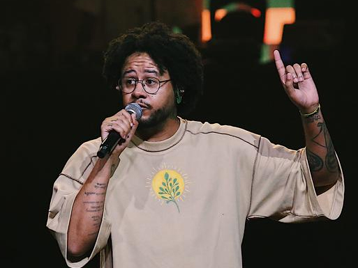

O rapper, compositor e escritor Emicida é uma das revelações da cena hip hop da década de 2000.
Recentemente, ele estreou com seu documentário AmarElo, na Netflix, em que aborda o legado da cultura negra.
Começou a se destacar na Rinha dos MC’s, na qual foi vencedor 11 vezes. Ativista, Emicida é incansável, empreende na gravadora independente Laboratório Fantasma e ainda escreve. É de sua autoria o livro infantil Amoras.

Idade 36 anos
nome verdadeiro:Leandro Roque de Oliveira
Gravadora(s): Laboratório Fantasma; Sony Music Brasil